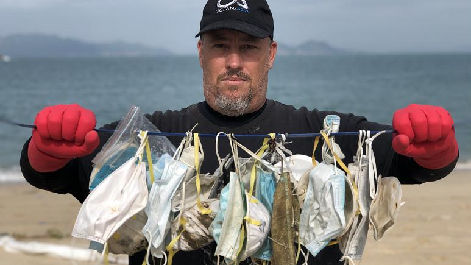

About Us
From an idea born on the beach to an international cleanup operation
We are a global force for good
- Global Recycled Standard- our bracelets cords and beads are made from 100% post-consumer recycled plastic and glass bottles
- We pay our artisans living wages
- 1% for the Planet- we donate at least 1% of our revenue to nonprofit environmental conservation organizations
- We have pulled millions of pounds of trash already in only a few short years
- GreenCircle Certified- our bracelets are made from at least 90% post-consumer recycled material
Our founders, Alex and Andrew, have been around the ocean their entire lives. They both grew up on the Florida coast, swimming, diving, fishing, and surfing. After becoming friends in college, they saved up their money for the surf trip of a lifetime to Bali. When they arrived, they found a beach that was completely covered in plastic, with trash-filled waves delivering more garbage with each break. Their eyes were immediately opened to the magnitude of the ocean plastic crisis, and they vowed on the spot to try to do something about it.
So they created the 4ocean bracelet and pledged to pull a pound of trash from the ocean for each one purchased, using the profits to scale cleanup operations, make donations to ocean-related nonprofits, and build an organizational infrastructure to support future growth.
Even though 4ocean has collected millions of pounds of trash from the ocean and built an international infrastructure to fight the ocean plastic crisis, we’re just getting started. The ocean plastic crisis is massive and growing. We’re here to clean the ocean and coastlines while working to stop the inflow of plastic by changing consumption habits. Our work won't be done until we can walk along our beaches — in Bali, in Haiti, in Florida, and around the world — and see nothing but warm sand and rolling waves.
Learn MoreStep by step
Every pound pulled is documented and tracked
Step 1
A picture is taken of the entire cleanup crew before they leave the main facility
Step 2
The impact zone is carefully photographed before our captains and crews start recovering any trash
Step 3
Photos are taken throughout the cleanup to document the crews’ progress
Step 4
The impact zone is photographed again once our crews are finished cleaning
Step 5
All of the trash collected is photographed alongside the crew that collected it
Step 6
The entire weighing process is photographed. The scale and a member of the cleanup crew must be visible in every photo. Once weighed, the trash is loaded onto the 4ocean vehicle and photographed again before it’s transported back to our main facility

Step 7
A designated crew member completes a TrashTracker™ Documentation Sheet, which includes the date, time spent cleaning, number of captains and crew involved, weight of each collection sack, amount of trash loaded onto each vessel, and total weight of the trash collected. Then a recorder and administrator double the recorded information for accuracy and dually authorize the TrashTracker™ Documentation Sheet with their signatures
Step 8
All of the data from the TrashTracker™ Documentation Sheet is uploaded into our digital TrashTracker™ by the end of each business day. The TrashTracker™ is audited and verified quarterly by the Better Business Bureau
Step 9
Repurposing recycled materials into raw material inventory for new life

What do we do with all the trash we pull?
Once the plastic is collected by our captains and crews, it’s weighed, photographed, and logged into our TrashTracker™ before it’s transported to our regional operational bases
- At each base, the plastic is sorted by type, color, and condition before it’s sent to our recycling partners for flaking, washing, and pelletizing
- These pellets are what we use to manufacture new and existing 4ocean products
- We partner with various local facilities to find the most sustainable method of disposal for materials that are too contaminated or deteriorated
- After all other methods of recycling are exhausted and we are unable to use materials, we dispose of them through thermal treatment or by responsibly landfilling the materials
In addition to cleaning the ocean, we’re addressing the causes and impacts of ocean plastic pollution and leading educational campaigns to reduce plastic usage and waste
The right tools to get the job done
Each ecosystem is unique, so we change our approach to best suit the environment.
Skimmers
Developing clean ocean technologies improves our cleaning efficiency.Boom systems
We often leverage boom systems to stop plastic before it can get into the ocean.
People
The best way to recover plastic is by using our own two hands, fishing nets, or other tools.Vessels
Having the right vessel is extremely important because each ecosystem is unique.Cleanup Sites
Click on a highlighted area to learn more
Boca Raton, Florida, USA
OPERATION OVERVIEW
Director of Operations:
Robin Hunting
Facility Location:
Boca Raton
Crew Members:
2
Vessels:
2
Bali, Indonesia
OPERATION OVERVIEW
Director of Operations:
Andi Rachmansyah
Facility Locations:
Denpasar,
Jembrana,
Medewi
Crew Members:
80
Vessels:
10
Port-Au-Prince, Haiti
OPERATION OVERVIEW
Director of Operations:
Sebastien Lambert
Facility Location:
Corridor Gangny
Crew Members:
78
Vessels:
4
Puerto Barrios, Guatemala
OPERATION OVERVIEW
Director of Operations:
Kevin Kuhlow
Facility Location:
Puerto Barrios
Crew Members:
Now hiring
Vessels:
2
Meet our teams!
We have team members around the world helping us fight the good fight.
Boca Raton, Florida, United States
Cleanup siteBali, Indonesia
Cleanup site
Port-Au-Prince, Haiti
Cleeanup sitePuerto Barrios, Guatemala
Cleanup siteProgress
Originally founded in 2017, we've been on a global cleanup mission, adding new cleanup sites around the world to better address the plastic crisis.
As time has gone on, we've seen great improvements in our efficicency and trash pull amounts. Please note that 2020 has experienced some setbacks due to the ongoing COVID-19 pandemic.
We look forward to further cleaning the oceans and returning to our anticipated cleanup levels in the future.
lbs pulled since 2017
Learn more about our progress
View our most recent numbers of how many pounds we've pulled both globally and this week, and get a behind the scenes look!
Take me thereConcern Spotlight
Learn what's hurting the ocean and how we can all help
Microplastics & PPE
If you’ve ventured out to a grocery store of late, you’ve likely seen a form of pollution that has become increasingly prevalent during the coronavirus pandemic— gloves, wipes, and masks littered in parking lots and throughout our communities. Preliminary data from surveys shows that gloves are the most commonly littered Personal Protection Equipment (PPE) being found in the United States.
Not only is this a potential health threat to those that may clean up the discarded PPE, it is creating an additional plastic pollution problem. Gloves, masks, and wipes are all typically made with plastic. Just like plastic bags, food packaging, and straws; plastic PPE that are improperly disposed of threaten our waterways and wildlife. Plastic does not biodegrade; instead, it breaks down into tiny pieces over time and eventually becomes microplastic pollution in our waters. Once microplastics enter our waterways, they act as toxic sponges, accumulating toxic chemicals present in the water, including pesticides and PCBs. Microplastics have been shown to accumulate toxins a million times higher than the surrounding waters. Studies show that when fish and aquatic life consume these microplastics, the chemicals are passed up the food chain to larger fish and wildlife, and ultimately, can end up on our dinner plates.

According to a WWF report, "if just 1% of the masks were disposed of incorrectly and dispersed in nature, this would result in as many as 10 million masks per month polluting the environment." "Considering that the weight of each mask is about 4 grams, this would result in the dispersion of more than 40 thousand kilograms of plastic in nature," the report stipulated.
What can be done about it?
The crux of the issue is two-fold: the public is improperly disposing of their masks, and masks are made in such a way that they are intended to be single use and from materials that are difficult to recycle. In order to address the PPE plastic crisis, new approaches towards mask making are essential.
Take for example face masks imported from China. Experts say they are made of multiple layers of different materials or polymers. This complexity makes it much harder to recycle such items. "Countries should try to develop products made of the same polymer, that we can trace and collect in sealed disposable bins, where they can be disinfected and recycled," said Claudia Brunori, a chemist from the Italian government agency for new technologies, energy and sustainable economic development (ENEA). This is happening on a small scale at the local level where NGOs, institutions and researchers have created reusable PPE, where the mask structure is retained and only the filter is thrown away. Mike Bilodeau, PlasticOceans regional director for Europe, says instead of importing PPE, it should be made locally and done in such a way that the plastic elements can be recycled and reused.
In conclusion, although it is essential for the public to have and use PPE, this is a great opportunity to enhance our PPE making techniques, so that the Coronavirus crisis does not further contribute to the plastic pollution one.
Citations:
https://www.citizenscampaign.org/cceblog/2020/4/24/stay-safe-and-end-ppe-pollution?fbclid=IwAR303ejxA6oq_chqV8ISsrVaujeTz1ddK8_ekrBcWput-Hv-LVOG_3v1Dm0
https://www.worldwildlife.org/threats/deforestation-and-forest-degradation
https://moderndiplomacy.eu/2018/09/08/flood-drought-and-satellites-online-tools-boost-climate-cooperation/
https://www.euronews.com/2020/05/12/will-plastic-pollution-get-worse-after-the-covid-19-pandemic
How can I help?
See what cleanups are happening near you, and meet some new friends along the way!
See volunteer eventsGet Involved
Learn what's hurting the ocean and how we can all help
Change can be effected at many different levels!
Choose the path you're comfortable with and see how you can help
Call your congressman, write your state rep, vote in local and state elections and make your voice heard! Whether its encouraging elected officials to make environment conscious, science based policy decisions or spreading the word by joining advocacy groups and campaigns, every little bit helps. It's always a great idea to familiarize yourself with the issue and possible ways to address it- remember, the ocean can't advocate for itself. It counts on eco-conscious ocean enthusiasts like yourself to help! Check out the inforgraphic below for some valuable info on what can be done on an institutional/governmental level to help.
![Preventing is better than Cleaning up [Infographic] | ecogreenlove](https://ecogreenlove.files.wordpress.com/2019/06/06072019_preventingplastics.png "Preventing is better than Cleaning up [Infographic] | ecogreenlove") Visual by Maphoto/Riccardo Pravettoni
Visual by Maphoto/Riccardo Pravettoni
Tackling the ocean plastic crisis is a big task, but don't feel like you have to do it alone! If we all work together, we can help save marine life, one pound at a time! Even small changes like using reusable grocery bags and swapping your facewash for one without microbeads can make a world of difference. Check out these tips below to see what small things you can do everyday that make a BIG difference!

Credit: oceanservice.noaa.gov